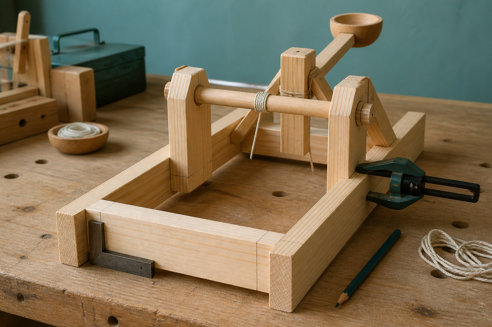
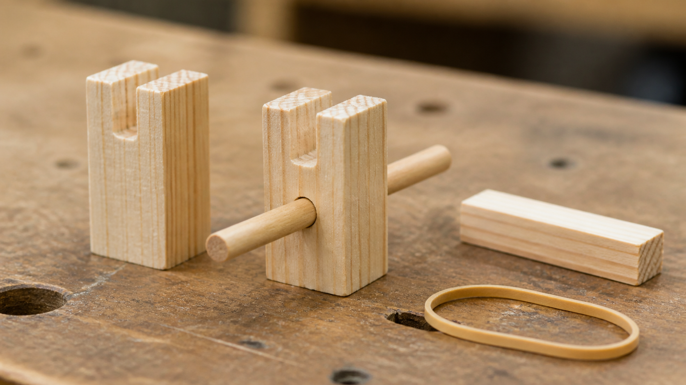
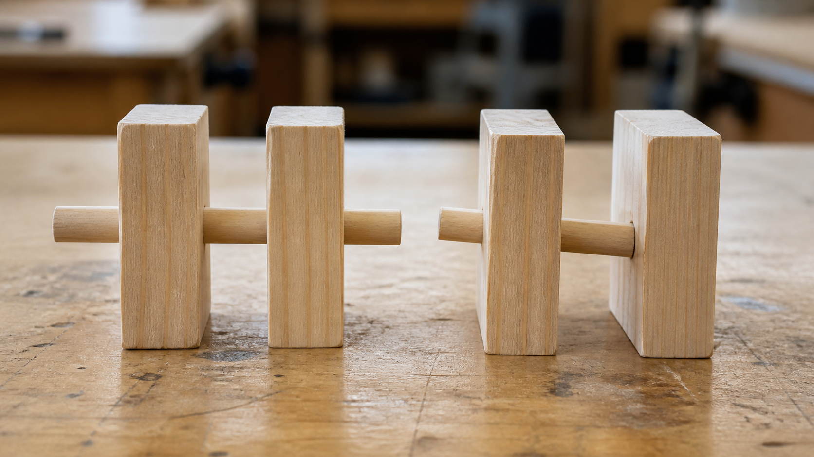
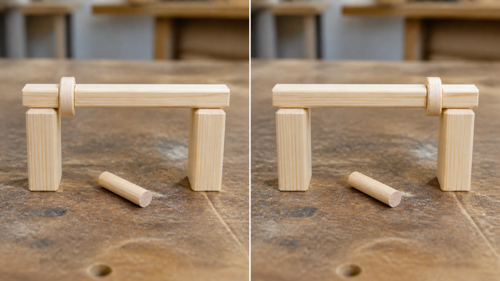

Adding more elastic energy automatically makes the system better.
More stored energy can increase loads and unwanted effects; quality depends on controlled, reliable system behaviour under teacher-approved conditions.
Module 7 of 10
Assembly creates relationships between components. The base and frame, pivot, lever arm, energy store, holder or release, and fasteners may all influence one another, although approved designs do not have to use identical parts. Quality comes from how the whole system behaves, not from any one component being impressive on its own.
Use this page to learn and prepare. Follow your teacher's demonstration, approved tools, local safety controls and testing instructions for every practical action.

Theory 1 of 3
A component has a function within the system. The base and frame support and locate other parts. A pivot permits controlled rotation. A lever arm carries motion, while an energy store supplies energy to the moving system. A holder or release can control when an interaction occurs, and fasteners connect parts. These descriptions identify functions rather than prescribe a design; your approved solution may organise or name components differently.
The important question is how the components interact. If a pivot changes position, the path of the lever arm can change. That may alter clearance, alignment, friction and the forces carried by the frame. A system map uses arrows to show these relationships. It prevents the designer from treating assembly as a bag of separate jobs and makes it easier to predict what else should be checked after one component changes.

Multiple-choice knowledge check
Choose an answer, check the feedback and try again if needed. Your checked progress is saved on this device.
0 of 4 questions checkedSaved on this device
Longer response
Create a written interaction chain for an approved Catapult design without giving assembly instructions. Explain how energy or movement passes through at least three connected component functions, then predict two downstream effects if the pivot position changes.
Use the scaffold to explain and justify your thinking. No drawing is required. Your writing autosaves in this browser.
Formative learning evidence — not proof of submission.
Theory 2 of 3
Alignment means components are positioned so that their intended paths and contact surfaces agree. Poor alignment can increase friction, cause rubbing or introduce unwanted sideways forces. Friction is not simply bad: it can help a fastener hold, yet unwanted friction in a moving relationship can waste energy and cause wear. Engineers identify where friction is useful and where it interferes with the intended function.
Play is unwanted free movement between parts, while stiffness describes resistance to changing shape. Too much play can make motion inconsistent, but a system that is extremely stiff in one area can still transfer forces to a weaker relationship elsewhere. Fastening quality includes position, security and suitability for the material and function. These ideas are checked together because fit, movement and load transfer are connected.

Multiple-choice knowledge check
Choose an answer, check the feedback and try again if needed. Your checked progress is saved on this device.
0 of 4 questions checkedSaved on this device
Longer response
A teacher-approved adjustment reduces unwanted rubbing but increases sideways movement. Explain why this is a system trade-off and decide whether the change should be accepted, reversed or retested using evidence about alignment, friction, play, stiffness and fit.
Use the scaffold to explain and justify your thinking. No drawing is required. Your writing autosaves in this browser.
Formative learning evidence — not proof of submission.
Theory 3 of 3
A controlled adjustment loop begins by stopping before a problem spreads. Check the observed behaviour against the approved design information, then identify a likely cause. Predict what one teacher-approved adjustment should change. After the adjustment, repeat the same relevant check and compare the new evidence with the earlier evidence. This makes the decision traceable rather than random.
Changing several features at once can hide cause and effect. If the result improves, you will not know which change mattered; if it becomes worse, you will not know which change caused the problem. Recording the reason, the single change and the result protects good evidence. It also shows that quality control is active throughout assembly, not a quick inspection added after the system is complete.

Multiple-choice knowledge check
Choose an answer, check the feedback and try again if needed. Your checked progress is saved on this device.
0 of 4 questions checkedSaved on this device
Longer response
Use a real or teacher-provided assembly observation to write a complete adjustment record. Separate what was observed from the possible cause, predict the effect of one teacher-approved change, compare the repeated check and justify the next decision.
Use the scaffold to explain and justify your thinking. No drawing is required. Your writing autosaves in this browser.
Formative learning evidence — not proof of submission.
Worked example
Vocabulary
Common traps
More stored energy can increase loads and unwanted effects; quality depends on controlled, reliable system behaviour under teacher-approved conditions.
The connections, alignment and force pathways between components can still create weak or inconsistent behaviour.
Video learning · 1:10
Collins Aerospace
Watch for: Which checks happen before and during assembly, and how do they protect the final user?
Source boundary: Narrow workplace example; it does not teach Catapult assembly or replace the module system diagram.

Use the quality-checkpoints diagram and make a table linking component, authorised criterion, check, evidence and action.
The privacy-enhanced player loads only when you choose it.
Applied Learning Activity
Practise locating a likely interaction fault and choosing an evidence-preserving response.
Evidence to save: Interaction chain, fault reasoning and adjustment record, saved as formative practice.
Type the response, reasoning or record requested above. It autosaves in this browser.
Use: ‘I observed ___. One possible cause is ___ because ___. I need evidence of ___ before deciding.’
Explain how the same observation could have two different causes and propose evidence that would distinguish them.
Higher-order evidence
At a teacher-approved check, a moving component rubs and the result is inconsistent. Use the interaction chain to propose a careful response.
Type your response. No drawing is required. It autosaves in this browser.